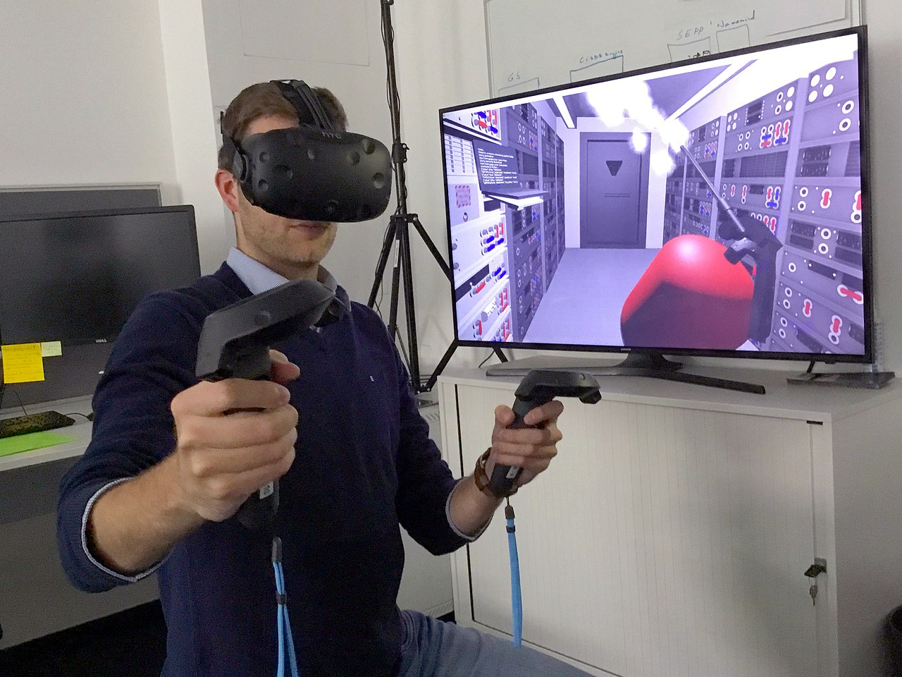
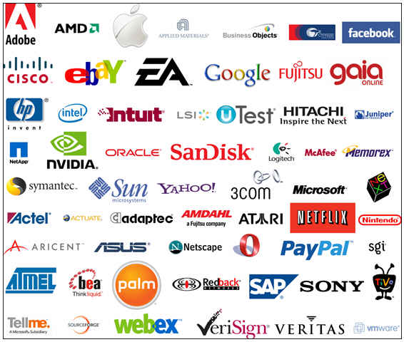

Virtuálna realita je moderná technológia, ktorá umožňuje ľuďom vstúpiť do digitálneho sveta pomocou špeciálnych okuliarov.
Používa sa hlavne pri hrách, ale aj vo vzdelávaní, medicíne a rôznych simuláciách. Ľudia môžu vo virtuálnej realite objavovať nové miesta, komunikovať s ostatnými alebo sa učiť nové veci.
V budúcnosti bude virtuálna realita ešte viac rozšírená a stane sa súčasťou každodenného života.

Softvérová firma je spoločnosť, ktorá sa zaoberá vývojom, tvorbou a údržbou počítačových programov a aplikácií. Takéto firmy navrhujú programy pre počítače, mobilné telefóny aj webové stránky. Ich cieľom je vytvárať funkčné, bezpečné a jednoduché riešenia pre používateľov.
Softvérové firmy zamestnávajú rôznych odborníkov, napríklad programátorov, ktorí píšu kód, dizajnérov, ktorí navrhujú vzhľad aplikácií, a testerov, ktorí kontrolujú chyby v softvéri. Často pracujú v tímoch a na projektoch, ktoré môžu trvať od niekoľkých mesiacov až po niekoľko rokov.
Medzi známe príklady softvérových firiem patrí Microsoft, Google a Apple. Tieto spoločnosti vyvíjajú operačné systémy, mobilné aplikácie, internetové služby a rôzne technologické riešenia, ktoré používajú milióny ľudí po celom svete.
Softvérové firmy sú dnes veľmi dôležité, pretože ovplyvňujú takmer každú oblasť života – od vzdelávania a zdravotníctva až po bankovníctvo a zábavu.
| Firma | Rok vzniku | Hodnota |
|---|---|---|
| Microsoft | 1975 | 3 bilióny USD |
| 1998 | 2 bilióny USD | |
| Apple | 1976 | 3 bilióny USD |
| Meta | 2004 | 1 bilión USD |